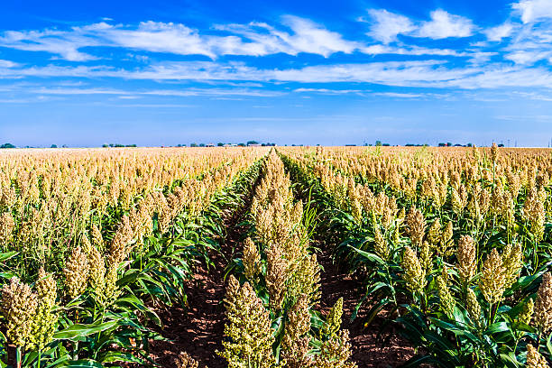

Millets: The Nutritious and Resilient Crop

Uses of Millets
Millets are highly nutritious and versatile crops with various uses:
- Food: Millets are used in a variety of foods like porridge, flour, and snacks.
- Animal Feed: Millets are often used as animal feed due to their high nutritional value.
- Medicinal Uses: Millets are known to help with diabetes management and are high in antioxidants.
- Alcohol Production: In some cultures, millets are used in brewing alcoholic beverages.
Types of Millets
There are several varieties of millets, each used for different purposes:
- Pearl Millet: Commonly used for flour and animal feed, known for its drought resistance.
- Finger Millet: Also known as ragi, rich in calcium and used for making porridge and flour.
- Foxtail Millet: Known for its high fiber content and used in traditional dishes and snacks.
- Little Millet: Used in food preparations, it has a low glycemic index, making it good for diabetes control.
Growth Requirements for Millets
Millets thrive under specific conditions:
- Climate: Millets are drought-tolerant and grow well in warm climates with minimal rainfall.
- Soil: Prefer well-drained, sandy or loamy soils with good fertility.
- Water: Millets require minimal water compared to other crops, making them suitable for dry areas.
Natural Fertilizers for Millets
To ensure healthy growth, consider using these natural fertilizers:
- Compost: Provides essential nutrients and helps improve soil structure.
- Green Manure: Using cover crops like legumes can help enhance soil fertility naturally.
- Farmyard Manure: A well-balanced organic fertilizer that promotes overall plant growth.
Pest and Disease Prevention
Millets are relatively resistant to pests and diseases, but prevention is key:
- Weevils: Can be managed by proper storage and using natural repellents like neem oil.
- Blight: Millets are susceptible to fungal blight, which can be controlled by crop rotation and fungicides.
- Termites: Ensure proper soil management and use of organic insecticides to control termites.
Benefits of Millets
- Highly Nutritious: Millets are rich in protein, fiber, and essential minerals like iron and magnesium.
- Drought Resistant: Millets are well-suited for dryland farming and require less water compared to other crops.
- Good for Health: They are gluten-free, making them an excellent choice for people with gluten intolerance.
Frequently Asked Questions
1. How long does it take for millets to grow?
Millets generally take 60 to 90 days from sowing to harvest, depending on the variety.
2. Are millets easy to grow?
Yes, millets are easy to grow and are suitable for dryland areas due to their drought resistance and low water requirements.
Back to Crop List